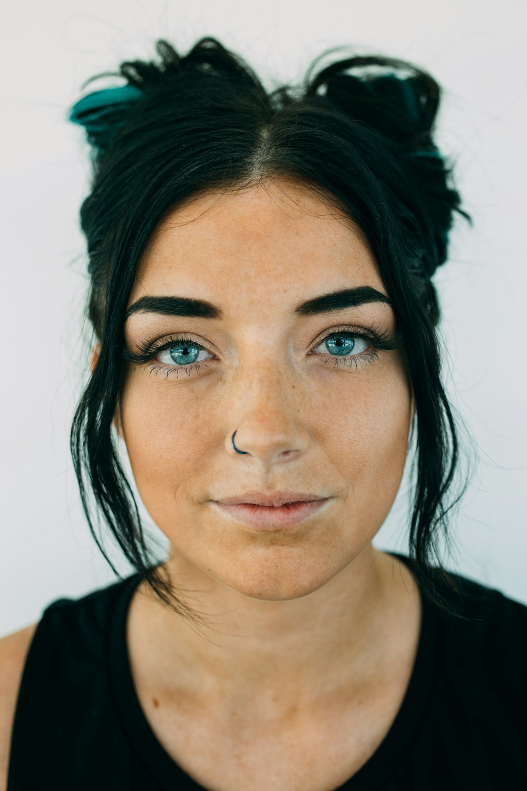

À propos

Bonjour, ici Camille !
Chasseuse de lumière et gardienne de souvenirs, attirée par l'entre-deux. Mon travail prend racine dans l'émotion, dans la magie tranquille du quotidien — la peau baignée de soleil, le lin qui ondule sous la brise, une main tenue une seconde de trop.
Une approche douce, naturelle et sincère pour révéler qui vous êtes vraiment.
En savoir plus